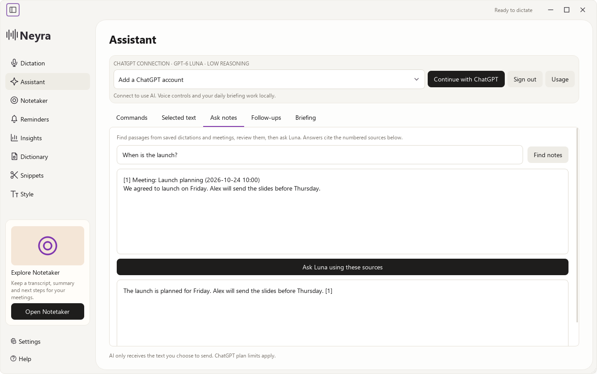

Ask your computer
Open a saved app, adjust the volume, control music, or set a timer. Speak a command with its own shortcut.
Runs locallyTurn speech into text with a keyboard shortcut. Local recognition on your CPU, ready for the app you're already using.
Windows & Linux Open source Early preview
A quick thought.
A message to send.
One less thing to type.
A text preview. No microphone access.
Keep your hands off the keyboard for a moment. Neyra handles the transcription.
Focus a text field and hold Ctrl + Win. You can also start recording from the dashboard.
The default Whistle engine recognizes English locally. Voz is an optional multilingual engine.
Your result copies to the clipboard and is pasted into the focused app when the desktop allows it.
The development preview brings commands, context, and follow-through into Neyra. AI features connect to ChatGPT and use GPT-6 Luna with low reasoning effort.
These additions are in development. Check the release notes for the features included in each download.

Open a saved app, adjust the volume, control music, or set a timer. Speak a command with its own shortcut.
Runs locallyCapture a selection, review what you're sharing, then ask for an explanation, summary, or translation.
Optional ChatGPTSearch saved dictations and meetings. Review matching passages before asking Luna a question about them.
Optional ChatGPTExtract suggested tasks with supporting quotes. Choose a task and a time to turn it into a reminder.
Review before savingBring today's local agenda and pending reminders together, then read them aloud with a system voice.
Runs locallyNeyra is currently a useful speech-to-text app in an early state. The default Needle Whistle model is small and uses very little RAM. Its results are okay, rather than exceptional.
Speech recognition runs locally on your CPU. Optional ChatGPT features send only the text you choose to share. Voice shortcuts work best on Windows and X11; native Wayland has restrictions.
Found something that needs fixing?Get the latest published build, or run Neyra from source. Read the release notes before installing an early build.
Release notesLocal Whistle dictation can run offline once its model is available. Voz and meeting models download files on first use. Optional ChatGPT features need an internet connection and an eligible account.
The assistant preview uses Continue with ChatGPT. No API key is needed for that connection. ChatGPT account permissions, model availability, and plan usage limits still apply.
Keep Neyra running in the tray for scheduled reminder notifications. Overdue reminders appear when you reopen it. Closing the app completely stops its scheduler.
The repository includes tooling to prepare a neyra-bin AUR package. A generated package recipe is not an AUR publication. Check the AUR guide for the current setup and submission steps.
Open an issue on GitHub. Include your operating system, the engine you used, and the error text. Leave private transcripts and account credentials out of reports.